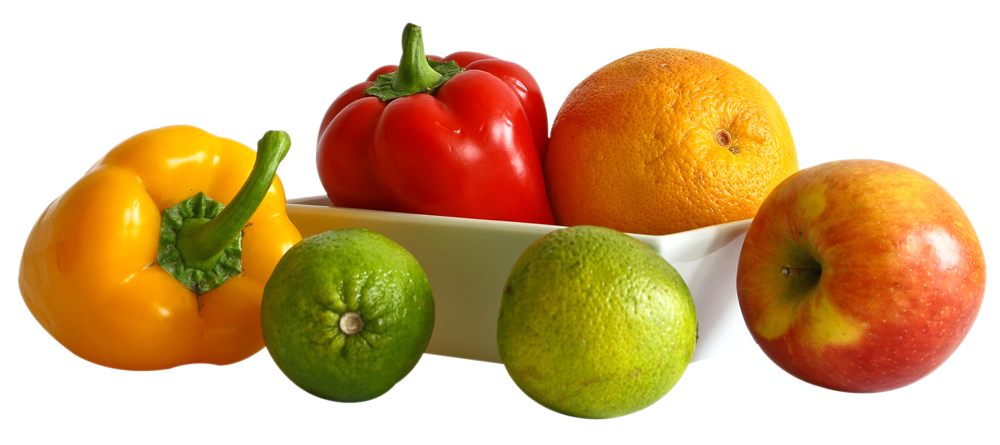

Welcome to Temera's Fruits & Vegetables
Fresh Fruits & Vegetables is your trusted local supplier of fresh, high-quality produce. We are committed to offering affordable and nutritious fruits and vegetables directly from local farms to your table.
Whether you're preparing a healthy meal for your family or stocking up for your small business, our shop is stocked with all your favourites — from apples, bananas, and oranges to spinach, tomatoes, and potatoes.
